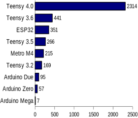

Lecture 1: Course Introduction and Programming Environment Setup
This lecture is devoted to installing the software suite used in this course so that everybody can follow the other lectures from Insa or from his home if it needs to be done in distant work.
Course Outline
All Lectures (2h on a computer) are labs using the Teensy board. The full course schedule can be found on the home page.
Introduction to AUD2020 and Teensy


Most of the document on this course come from PJRC. Actually most of the documentation on Teensy is from PJRC.
The development in AUD are performed on teensy which is developped by PJRC. It is a microcontroller that offers many I/O pins and a USB interface. It is programmed using a custom/modified version of the arduino programming environment (teensyduino).
Teensy is a brand of microcontroller development boards designed by the co-owner of PJRC, Paul Stoffregen. The first Teensy 2.0, Teensy++ 2.0 (and discontinued predecessors) use an 8-bit AVR microcontrollers. Teensy 3.0 (and up) have instead Freescale microcontrollers, running ARM Cortex-M CPUs. The technical characteritics of all Teensy can be compared here.
In AUD, we use the Teensy 4.0 which contains an ARM Cortex-M7 at 600 MHz with a Floating point unit, hence it can handle non trivial audio treatment.
Teensy 4.0 and Audio Shield (from PJRC Website)
Teensy 4.0 uses many powerful CPU features useful for true real-time microcontroller platform. The CPU is an ARM Cortex-M7 dual-issue superscaler clocked at at 600 MHz. CPU performance is many times faster than typical 32 bit microcontrollers. The Floating Point Unit performs 32 bit float and 64 bit double precision math in hardware. DSP extension instructions accelerate signal processing, filters and Fourier transform. The Audio library automatically makes uses of these DSP instructions.

Teensy performance from Core Benchmarks
This pinout reference card comes with the Teensy 4.0 (do not loose it!). The pins are not 5V tolerant. Do not drive any digital pin higher than 3.3V.

The Teensy 4.0 has a total of 40 input/output signal pins. 24 are easily accessible when used with a solderless breadboard. The available pins include general purpose IO (GPIO, digital or analog, i.e. ADC), as well as integrated serial protocols (I2C, I2S, CAN, SPI and UART protocols) that are used to connect to other devices.
In AUD, we use the audio adaptor board provided by PJRC that integrates a low power stereo codex (NXP Semiconductors SGTL5000 codec) and a SD card reader.


The audio codec connects to Teensy using 7 signals (Yellow signal in pin map above) which are used by two protocol: I2C and I2S. This is a traditional configuration for audio codec: the I2C (or I²C: Inter-Integrated Circuit) protocol is used to configure the codec (sample rate, input and output pins etc.) and the I2S (or I²S: Inter-IC Sound) is used to transfer samples bit by bit in both direction (i.e. from and to the teensy). The I2C pins SDA and SCL are used to control the chip and adjust parameters. Audio data uses I2S signals, TX (to headphones and/or line out) and RX (from line in or mic), and 3 clocks, LRCLK (44.1 kHz), BCLK (1.41 MHz) and MCLK (11.29 MHz). All 3 clocks are created by Teensy which means that the SGTL5000 operates in "slave mode".
The schematics of the audio shield board, rev. D, can bee seen here and the schematic of the Teensy 4.0 can be seen at the end of the page here. Of course, as they are both made by PJRC, they are designed to be compatible. We (the teachers!) have soldered the connectors so that the audio shiel can be easily connected to the tennsy.
The USB connector of the Teensy can support many serial communication from the host computer to the Teensy: (JTAG for flashing/programming, Serial UART, midi, mouse etc. see Tools -> USB Type menu in arduino IDE). In AUD, the USB connector is used to program the device (i.e., download binary code into flash memory) and ascii communication between the host and the Teensy (i.e. using UART/Serial communicatino protocol). In linux machines, when the teensy USB cable is connected, the serial port will appear as /dev/ttyACM0
Teensy 4.0 Processor: NXP i.MX RT1062
The Teensy uses the i.MX RT1062 processor chip from NXP (a model of the serie i.MX RT1060). The main components of the chip can be seen on the image extracted from the i.MX RT1060 datasheet. The processor used in the chip is an ARM Cortex-M7 (technical reference manuel of Cortex-M7 here). The ARM Cortex-M7 is the latest architecture that uses the ISA ARMv7 (ARM v7 reference manuel)
Teensy 4.0 has 2 Mbyte of flash memory intended for storing your code. 1Mbyte of memory is available for execution (i.e., for variables and data storing during execution). Half of this memory (RAM1) is accessed as tightly coupled memory for maximum performance. The other half (RAM2) is optimized for access by DMA. Normally large arrays & data buffers are placed in RAM2, to save the ultra-fast RAM1 for normal variables. The mapping of variables to memories is indicated at the variables declaration by compiler directive (such as DMAMEM for variable in RAM2 or FASTRUN for variable in RAM1, see here.
The memory map is the following:
Teensy Development Framework: teensyduino
The Teensy can be programmed in many ways:
- Arduino's IDE software with the Teensyduino add-on is the primary programming environment for Teensy.
- Visual Micro,
- PlatformIO
- Makefiles: type
makein directory$(arduino)/hardware/teensy/avr/cores/teensy4/.
in AUD we will use most popular Arduino's IDE with Teensyduino. In general, programming the Teensy amounts to compile an application to an executable (main.elf usually) and then download the application on the teensy which is connected through its USB interface to your PC. The teensyduino software add the source file to arduino in order to compile code for the teensy and call the teensy_loader that flashes the main.elf in the connected Teensy.
Installing teensyduino on Your Computer
Teensyduino can be installed on Macintosh, Linux or Windows platform, we recommend that you install it on your own machine, however it is also installed on TC machines.
The installation procedure is the following:
-
Install arduino from here: https://www.arduino.cc/en/software. Warning, make sure to install one of the supported version: 1.8.5, 1.8.9, 1.8.13, 1.8.15, 1.8.16 or (recommended:) 1.8.19. Download the installer corresponding to your OS (click "just download" if you do not want to donate), This installer is just an archive containing all the arduino files. Hence place it in an appropriate directory on your drive, Then unzip or untar it.The directory created (
/home/mylogin/arduino-1.8.19for instance) will become your$ARDUINOPATHvariable. -
Install teensyduino following these instructions: https://www.pjrc.com/teensy/td_download.html
-
Clone embaudio github repository : https://github.com/grame-cncm/embaudio
-
You will need some files written specifically for the AUD cours: the
examples/teensy/libraries/mydspdirectory available in the github cloned . Copy themydspdirectory in the directory$ARDUINOPATH/libraries
Getting Started on TC Machines
Arduino is installed in directory /opt/arduino-1.8.19. Launching arduino is done simply by typing the command arduino in a command line shell. However, the mydsp library must be made available to arduino. For that, you have to select a directory for additionnal arduino library, for instance /home/mylogin/Arduino and indicate it to arduino par writing the directory path in file->preference->sketchbook location. Then copy the mydsp directory in the /home/mylogin/Arduinodirectory.
Flashing the LED and Using Serial Terminal
For programming the teensy:
- Connect the teensy on your computer or on the TC machine
- Launch arduino:
> arduino - Make sure that the correct board is selected: select
Tools -> Boards -> Teensyduino -> Teensy 4.0 - Make sure that the serial port is configured correctly: select
Tools -> USB Type -> Serial - Select the flashing led example: select
File -> Examples -> 01.Basic -> Blink. A new arduino editor with the 'Blink' application code. - Compile and download the code by clickin in 'Upload' button in ardiuno (big arrow). This should launch the teensy_loader, and upload the code, then the led should be blinking.
- Select the serial communication example: select
File -> Examples -> Teensy -> Serial -> EchoBoth. A new arduino editor with the 'EchoBoth' application code. - Compile and download the code. Launch the
serial monitorwindow from arduino (magnifying glass on the upper right). This should launch a new window showing serial communcations. Type some characters in the windown and send them (i.e. type 'return'), what is happening? Try to understand the code of theEchoBothapplication.
Audio applications on Teensy
The application prepared for the AUD course are available here or you can find them in the embaudio git repository (examples/teensy/projects directory). Download the file and untar it in, this will create an projects directory. Open (File -> open... in arduino) the crazy-sine/crazy-sine.ino project. Download it to teensy and ear the crazy sine.